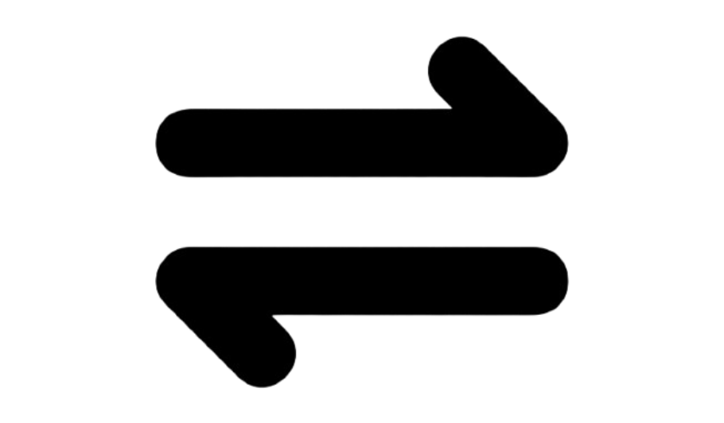
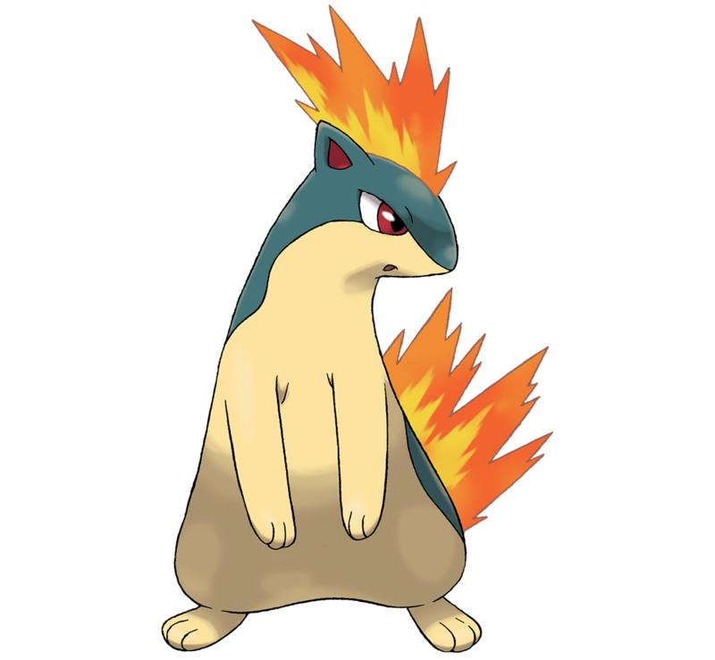
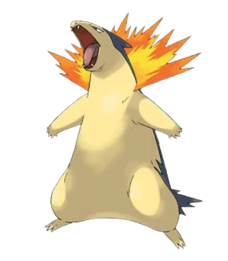

Tipo: fuego
Descripción:
Cyndaquil se protege soltando llamas por el lomo. Cuando está enfadado las llamas son feroces, pero si está cansado solo consigue lanzar algunas chispas que no llegan a iniciar una combustión completa.